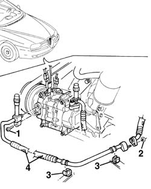
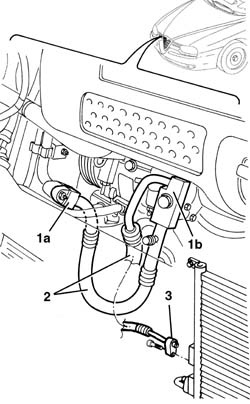
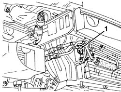
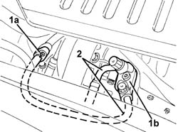
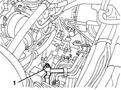
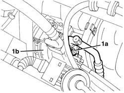
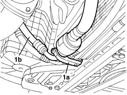

5040A73 compressor inlet pipe - r r
- Path
- Procedures > 50 AUXILIARY UNITS > 5040 AIR CONDITIONING CASING AND COMPONENTS > 5040A air conditioner coolant circuit > 5040A73 compressor inlet pipe - r r
- Kind
- repair procedure (removal / refitting; the operation number is the code)
- Applies to
- engines: 1.6 TS , 1.8 TS, 2.0 JTS, 2.5 V6, 3.2 V6, 1.9 JTD 8v , 1.9 JTD 16v, 2.0 JTS, 2.4 JTD 10v, 2.4 JTD 20v; all production periods
- Interactive page
- https://sloeber94.github.io/elrnDB-a156/en/#/3238320
Applies to: all engines; all production periods
Applies to: engines: 1.6 TS , 1.8 TS, 2.5 V6, 3.2 V6, 1.9 JTD 8v , 2.4 JTD 10v; all production periods; only with equipment: Air Conditioner
 Removing
Removing
 Refitting
RefittingPlace the vehicle on a lift.
Drain the coolant 5040A10 Air conditioning refrigerant CIRCUIT - Draining and Refilling
5540D10 l/h or r/h fog lamp (one) - r+r (right)
1. Undo the bolt.
2. Undo the nut.
3. Release the pipe from the retaining bands.
4. Remove the pipe

Applies to: engines: 1.6 TS , 1.8 TS, 2.5 V6, 3.2 V6, 1.9 JTD 8v , 2.4 JTD 10v; all production periods; only with equipment: Air Conditioner
Refitting
RemovingCheck that the pipe is not damaged or cracked.
Reposition the pipe and fix it using the retaining bands.
Connect the pipe connectors.
Tighten the nut fastening the pipe to the intermediate connector.
 | Fastening | Component | Ø | Value (daNm) |
|---|---|---|---|---|
- | Bolt | Pipe with intermediate connector | M6 | 0.9 - 1.1 |
Applies to: engines: 1.6 TS , 1.8 TS, 2.5 V6, 1.9 JTD 8v ; all production periods; only with equipment: Air Conditioner
Tighten the bolt fixing the pipe connector to the compressor.
| Fastening | Component | Ø | Value (daNm) |
|---|---|---|---|---|
- | Bolt | Compressor pipe connector | M6 | 3.2 - 4.6 |
Applies to: engines: 2.4 JTD 10v; all production periods; only with equipment: Air Conditioner
Tighten the bolt fixing the pipe connector to the compressor.
| Fastening | Component | Ø | Value (daNm) |
|---|---|---|---|---|
- | Bolt | Compressor pipe connector | M6 | 0.9 - 1.2 |
Applies to: engines: 1.6 TS , 1.8 TS, 2.5 V6, 3.2 V6, 1.9 JTD 8v , 2.4 JTD 10v; all production periods; only with equipment: Air Conditioner
5540D10 l/h or r/h fog lamp (one) - r+r
Repressurize the coolant 5040A10 Air conditioning refrigerant CIRCUIT - Draining and Refilling
Remove the vehicle from the lift.
Applies to: engines: 2.0 JTS, 2.0 JTS; all production periods; only with equipment: Air Conditioner
Removing
RefittingDrain the coolant ( 5040A10 Air conditioning refrigerant CIRCUIT - Draining and Refilling ).
7055A43 central front grille - r r
7055A41 RIGHT FRONT GRILLE - R.R. (right and left)
1. Undo the fixing bolts and disconnect the intermediate connector (1a) and the connector (1b) for the compressor.
2. Undo the fixing bolt and disconnect the condenser connector.
3. Remove the pipe

Applies to: engines: 2.0 JTS, 2.0 JTS; all production periods; only with equipment: Air Conditioner
Refitting
RemovingCheck that the pipes are not damaged and that there are no cracks which would affect the seal.
Position the pipe and connect it to the condenser.
Connect the pipe to the compressor and to the intermediate connector.
7055A41 RIGHT FRONT GRILLE - R.R. (right and left)
7055A43 central front grille - r r
Repressurize using coolant fluid ( 5040A10 Air conditioning refrigerant CIRCUIT - Draining and Refilling ).
Applies to: engines: 1.9 JTD 16v; all production periods; only with equipment: Air Conditioner
Removing
RefittingObserve the following precaution.
7025A12 Engine front sound insulation COVER - R.R.
Drain the coolant ( 5040A10 Air conditioning refrigerant CIRCUIT - Draining and Refilling ).
7055A43 central front grille - r r
7055A41 RIGHT FRONT GRILLE - R.R.
1. Disconnect the pipe connector from the condenser.

Applies to: engines: 1.9 JTD 16v; all production periods; only with equipment: Air Conditioner
1. Disconnect the intermediate connector (1a) and the connector for the pipe (1b) from the compressor.
2. Remove the pipe

Applies to: engines: 1.9 JTD 16v; all production periods; only with equipment: Air Conditioner
Refitting
RemovingCheck that the pipe is not damaged or cracked.
Position the pipe.
Connect the pipe connectors and tighten the bolts and the nut.
| Fastening | Component | Ø | Value (daNm) |
|---|---|---|---|---|
- | Bolt | COOLANT SYSTEM FITTINGS | M6 | 0.9 |
| Fastening | Component | Ø | Value (daNm) |
|---|---|---|---|---|
- | Nut | COOLANT SYSTEM FITTINGS | M6 | 0.9 |
7055A41 RIGHT FRONT GRILLE - R.R.
7055A43 central front grille - r r
Repressurize using coolant fluid ( 5040A10 Air conditioning refrigerant CIRCUIT - Draining and Refilling ).
Applies to: engines: 2.4 JTD 20v; all production periods; only with equipment: Air Conditioner
Removing
RefittingObserve the following precaution.
Place the vehicle on a lift.
Drain the coolant ( 5040A10 Air conditioning refrigerant CIRCUIT - Draining and Refilling ).
5530B52 Battery DRIP TRAY/SUPPORT - R.R.
1. Undo the nut and disconnect the connector.

Applies to: engines: 2.4 JTD 20v; all production periods; only with equipment: Air Conditioner
1. Undo the bolt and disconnect the connector (1a) from the compressor (1b).

Applies to: engines: 2.4 JTD 20v; all production periods; only with equipment: Air Conditioner
Raise the car.
1. Working underneath the radiator, open the retaining band (1a) and remove the pipe (1b) from the compressor to the evaporator.

Applies to: engines: 2.4 JTD 20v; all production periods; only with equipment: Air Conditioner
Refitting
RemovingCheck that the pipe is not damaged or cracked.
Place the pipe in position and secure it using the retaining band.
Connect the connector for the pipe to the compressor and tighten the bolt.
| Fastening | Component | Ø | Value (daNm) |
|---|---|---|---|---|
- | Bolt | COOLANT SYSTEM FITTINGS | M8 | 1.3 |
Connect the intermediate connector and tighten the nut.
| Fastening | Component | Ø | Value (daNm) |
|---|---|---|---|---|
- | Nut | COOLANT SYSTEM FITTINGS | M6 | 0.9 |
5530B52 Battery DRIP TRAY/SUPPORT - R.R.
Repressurize using coolant fluid ( 5040A10 Air conditioning refrigerant CIRCUIT - Draining and Refilling ).
Topics linked from this page (9)
- 5040A10 Air conditioning refrigerant CIRCUIT - Draining and Refilling
- 5530B10 battery - r+r
- 5530B52 Battery DRIP TRAY/SUPPORT - R.R.
- 5540D10 l/h or r/h fog lamp (one) - r+r
- 7025A12 Engine front sound insulation COVER - R.R.
- 7025A14 Bonnet LID - R.R.
- 7055A41 RIGHT FRONT GRILLE - R.R.
- 7055A43 central front grille - r r
- 7210E10 R.R. FRONT BUMPER